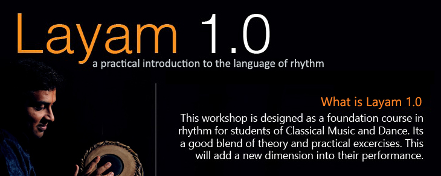

Layam 1.0 — An Experiential Rhythm-Learning Programme
Layam 1.0 is an immersive, hands-on workshop designed to introduce students of Classical Music and Dance to the fascinating world of rhythm. Moving beyond theoretical concepts, the workshop combines practical exercises, rhythmic explorations and interactive learning to help participants understand Tala, its elements, different speeds (Kala), Nadais and the mathematical intricacies of Jathis and Korvais.
Through recitation, rhythmic exercises and practical demonstrations, participants develop a deeper understanding of rhythm and its application in musical and dance performances.